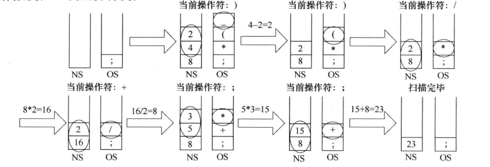
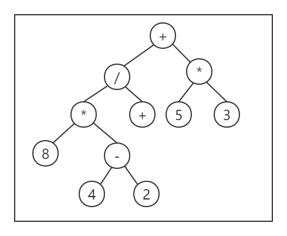
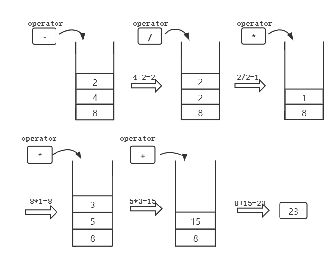

堆栈与队列及其应用|数据结构Ⅱ
堆栈
栈的基本概念
栈（Stack）是只允许在一端进行插入或删除操作的线性表。

栈顶（Top）：线性表允许进行插入和删除的一端。
栈底（Bottom）：固定的，不允许进行插入和删除的另一端。
空栈：不含任何元素的空表。
假设某个栈 如上图所示。
则 为栈底元素， 为栈顶元素。由于栈只能在栈顶进行插入和删除操作，故进栈次序依次为； 而出栈次序为。
栈的明显的操作特征为后进先出（Last In First Out，LIFO），故又称 后进先出的线性表。
栈的数学性质
对于 个不同元素按照不同的进栈方式，其出栈次序的可能种数为 .
下面我们仅给出递推式的推导，对其求解可得到结果正是上面给出的公式，这个公式我们称之为卡特兰数（Catalan）。
因为求解过程涉及到柯西乘积，感兴趣请移步到本站关于卡特兰数的相关文章继续深究。
假设 个元素的合法出栈顺序有 种，自然有.
此外，还假设进栈次序依次为。接下来我们讨论第一个进栈的元素 它有哪些出栈的可能即可。
若 在出栈序列中，排在第 个位置，我们可以据此把出栈序列以 为界限，一分为二：
对于在 之前出栈的那 个元素来说，因为入栈时 是第一个入栈的，所以这些元素的出栈次序不依赖，是自由进出的一组序列；也就是它们的出栈次序正好就是一个子问题 。
而对于 之后出栈的 个元素， 出去之后，它们的出栈次序也是自由的，所以也是一个子问题 。
根据组合性原理， 排在 位置的所有可能的出栈次序个数就是.
遍历所有可能的 的取值，则有：
卡特兰数的相关性质与证明见本站文章：算法与组合数学：卡特兰数
STL中的栈
C++ STL（标准模板库）是一套功能强大的
C++模板类，提供了通用的模板类和函数，这些模板类和函数可以实现多种流行和常用的算法和数据结构，如向量、链表、队列、栈。
这里我们通过介绍 STL 中栈的基本操作，也顺便理清了栈的相关操作内容。前者在 ACM 比赛或是 算法机试中较为常用，所以此处一并介绍。
栈的创建
由于 stack 适配器以模板类 stack<T,Container=deque<T>>（其中 T 为存储元素的类型，Container 表示底层容器的类型）的形式位于 <stack> 头文件中，并定义在 std 命名空间里。
因此，在创建该容器之前，程序中应包含以下 2 行代码：
1 |
|
std命名空间也可以在使用stack适配器时额外注明。
创建一个不包含任何元素的 stack 适配器，并采用默认的 deque 基础容器：
1 | std::stack<int> values; |
支持的成员函数
stack 是一类存储机制简单、提供成员函数较少的容器。下表列出了 stack 容器支持的全部成员函数。
| 成员函数 | 功能 |
|---|---|
empty() | 当 stack 栈中没有元素时，该成员函数返回 true；反之，返回 false。 |
size() | 返回 stack 栈中存储元素的个数。 |
top() | 返回一个栈顶元素的引用，类型为 T&。如果栈为空，程序会报错。 |
push(const T& val) | 先复制 val，再将 val 副本压入栈顶。这是通过调用底层容器的 push_back() 函数完成的。 |
push(T&& obj) | 以移动元素的方式将其压入栈顶。这是通过调用底层容器的有右值引用参数的 push_back() 函数完成的。 |
pop() | 弹出栈顶元素。 |
emplace(arg...) | arg... 可以是一个参数，也可以是多个参数，但它们都只用于构造一个对象，并在栈顶直接生成该对象，作为新的栈顶元素。 |
swap(stack<T> & other_stack) | 将两个 stack 适配器中的元素进行互换，需要注意的是，进行互换的 2 个 stack 适配器中存储的元素类型以及底层采用的基础容器类型，都必须相同。 |
使用示例：
1 |
|
运行结果为：
1 | size of my_stack: 3 |
栈的顺序存储
顺序栈 利用一组连续的存储单元存放自栈底到栈顶的数据元素，同时附设一个指针 top 始终指向当前栈顶元素。（不同教材的定义有所不同）
1 |
|
由于顺序栈的入栈操作受数组上界约束，所以对最大空间估计不足时，可能发生栈上溢。
基本操作的顺序栈实现
栈顶指针
1 | void InitStack(SqStack &S){ // 初始化 |
初始时，S.top 应置 -1，此时栈空；当 S.top == MaxSize-1 时栈满。
栈长：S.top+1
栈顶元素：通过 S.data[S.top] 访问得到。
入栈与出栈
1 | /* 入栈 */ |
共享顺序栈
共享栈 是利用栈底的位置不变性，将两个顺序栈共享同一个一维数组空间的建栈策略。
假设两个栈分别为，二者共享存储区 。采用栈顶相向，迎面增长的方式进行存储，即栈底设置在两端、栈顶 向共享空间的中间延申。如下图所示：
我们规定 top1 == -1 表示 的栈空；top2 == MaxSize 表示 的栈空。
当且仅当二者的栈顶指针相邻，top2-top1 == 1 时，栈满。
（此规定不同教材的定义有所不同）
1 | typedef struct{ |
下面是共享栈的入栈与出栈的实现，通过传递形参标志 index 表名当前需要对左边还是右边的栈进行入栈或出栈。
1 | /* 入栈 */ |
栈的链式存储
链栈 的优点是便于多个栈共享存储空间以及提高效率，并且不存在上溢。
链栈通常采用单链表实现，并且规定所有操作都在表头进行。
下面是以不预设头结点为前提的链栈类型描述。
1 | typedef struct LinkNode{ |
队列
队列的基本概念
队列（Queue）简称：队。也是一种操作受限的线性表。
要求只允许在表的一段进行插入（称为入队），而在表的另一端进行删除（称为 出队）。
特点：先进先出（First In First Out，FIFO）。
- 空队列：不含任何元素的空表。
- 队尾（Rear）：允许插入的一端。此时，队列中最靠近队尾的一个元素叫作队尾元素。
- 队头（Front）：允许删除的一端。相应的，最靠近队头的一个元素叫作队头元素。
STL中的队列

queue 容器适配器和 stack 的创建和操作都说类似的。并且有一些成员函数相似，但在一些情况下，工作方式有些不同。
| 成员函数 | 功能 |
|---|---|
empty() | 如果 queue 中没有元素的话，返回 true。 |
size() | 返回 queue 中元素的个数。 |
front() | 返回 queue 中第一个元素的引用。如果 queue 是常量，就返回一个常引用；如果 queue 为空，返回值是未定义的。 |
back() | 返回 queue 中最后一个元素的引用。如果 queue 是常量，就返回一个常引用；如果 queue 为空，返回值是未定义的。 |
push(const T& obj) | 在 queue 的尾部添加一个元素的副本。这是通过调用底层容器的成员函数 push_back() 来完成的。 |
emplace() | 在 queue 的尾部直接添加一个元素。 |
push(T&& obj) | 以移动的方式在 queue 的尾部添加元素。这是通过调用底层容器的具有右值引用参数的成员函数 push_back() 来完成的。 |
pop() | 删除 queue 中的第一个元素。 |
swap(queue<T> &other_queue) | 将两个 queue 容器适配器中的元素进行互换，需要注意的是，进行互换的 2 个 queue 容器适配器中存储的元素类型以及底层采用的基础容器类型，都必须相同。 |
和
stack一样，queue也没有迭代器，因此访问元素的唯一方式是遍历容器，通过不断移除访问过的元素，去访问下一个元素。
下面这个例子中演示了表中部分成员函数的用法：
1 |
|
运行结果为：
1 | size of my_queue: 3 |
队列的顺序存储
队列的顺序实现是指分配一块连续的存储空间存放队列元素，并且还需附设两个指针 front, rear 分别指向队头和队尾。
我们规定，rear 指向队尾元素的下一个位置；front 指向对头元素。（不同教材的定义有所不同）
1 |
|
队指针
根据我们前面提到的规定，有：
- 初始状态：
Q.front == Q.rear == 0 - 判空：
Q.front == Q.rear - 入队操作：队不满时，将值送到队尾所指处，队尾指针加1；
- 出队操作：队不空时，取出队头元素，队头指针加1。
1 | void InitQueue(SqQueue &Q) { // 初始化 |
注意，我们并不能用 Q.rear == MaxSize 来作为判满条件。
原因是我们对队列的入队出队处理是通过移动指针实现的，出队时，Q.front 会上移，如下图的 (d) 部分所示。此时入队会出现上溢出，但这种溢出是一种”假溢出“。

在真正介绍入队与出队的编程实现之前，我们也在图中发现了这种”假溢出“的缺陷。为了克服这种缺陷，我们将引入循环队列的思想。
循环队列
我们知道，当队头和队尾指针在经过复数次出队入队后，它们的位置可能会移动到数组较后的位置，此时前面的空闲空间将得不了使用，也就是前面给出的图示那样，之后还会出现假溢出问题。
为了解决这个问题，我们将顺序队列臆造为一个环状的空间，使得存储队列元素的表从逻辑上成为一个环，这样的队列就是循环队列。
最简单的实现方法就是当队首指针 Q.front == MaxSize-1 之后，若它再前进，就把它调整到 0 的位置。这可以直接用模运算实现！
- 初始时：
- 队首指针进1：
- 队首指针进1：
- 队列实际长度：
其中， 是开辟的连续空间的单位个数，即 MaxSize
那么如何判断队满呢？
之前我们规定队空条件是 Q.front==Q.rear。但对于循环队列来说，当元素的入队速度高于出队速度时，就会出现队尾指针在环内追赶上队首指针的情况，此时 Q.front==Q.rear 成立，我们就无法判断当前是队空还是队满了。如下图 (d1) 所示。

区分队空还是队满，可采用如下三种处理方法。
方法一 我们 **约定：队头指针指向队尾的下一个位置时队满** ，这样将牺牲一个存储单元，但也是较为普遍的实现方法。如上图 (d2) 所示。于是，队满条件就是 (Q+rear+1)%MaxSize == Q.front ，队空条件不变。
入队与出队
我们利用普遍使用的方法一进行队满判断。
1 | /* 入队 */ |
队列的链式存储
队列的链式表示称为链队列，它实际上是一个同时带有队头指针和队尾指针的单链表。
- 头指针指向队头结点；
- 尾指针指向队尾结点，也就是单链表的最后一个结点。（注意与顺序队列的不同）
1 | typedef struct LinkNode{ //链表结点类型 |
显然，
对于不带头结点的链表，当 Q.front == NULL && Q.rear == NULL 时，队空。
对于带头结点的链表，当 Q.front == Q.rear 时，队空。
并且，单链表表示的链队列特别时候数据元素变动比较大的情形，还不会出现队列溢出问题。
基本操作的链队列实现
下面描述的都是在带头结点的单链表上的实现，因为不带头结点往往需要处理特殊情况，而带上头结点后，插入与删除操作可以得到统一。
1 | void InitQueue(LinkQueue &Q) { //初始化 |
利用两个栈模拟队列
现已知两个栈 可供使用，且其入栈、出栈、判空判满操作均以提供。
尝试利用两个栈实现模拟一个简单队列的入队出队与判空操作。
简单起见，我们利用 STL 标准库提供的 stack 容器作为“已知各种操作”的两个栈。考虑下面几种情况：
- 入队。入队操作可简单进行，只需保证入队的元素无遗漏地存储在栈中即可，不妨就将 作为容器，存储入队元素。如果 满了，则在 为空的情况下先全部送入 再继续存储。
- 出队。由于栈的出栈次序与队列的出队次序正好相反，所以我们把存放于 中的元素依次弹出（出栈）并放入 中。此时 的出栈次序就与普通队列一致了，我们只需把 栈顶元素弹出即可完成出队。但此前需先判断 是否为空，否则将会产生顺序混乱。
- 判空。
前面我们使用的代码，包括链表与顺序表都是按照
C语言的写法。
这里区别于此，我们采用C++面向对象的编写方式给出示例，以展现更加多元的编程。由于STL中并没有对栈长做限制，所以这里我们人为进行判满处理。只是作为逻辑上的补充。
1 |
|
双端队列
双端队列（Deque）是指允许两端都可以进行入和出队操作的队列。deque 是 “double ended queue” 的简称。那就说明元素可以从队头出队和入队，也可以从队尾出队和入队。
由此可见，Deque 其实就是 Queue 和 Stack 混合而成的一种特殊的线性表，完全可以参考之前面的 Queue, Stack 的实现来构建双端队列的实现。

- 输入受限的双端队列：允许在一段插入和删除，而另一端只允许删除
- 输出受限的双端队列：允许在一段插入和删除，而另一端只允许插入
若限定双端队列从某个端点插入的元素只能从该端点删除，则双端队列就蜕变为了栈底相邻接的栈（注意不是共享栈）。
堆栈在算术表达式的应用
中缀表达式|Nifix expression
中缀表达式是一个通用的算术或逻辑公式表示方法。
顾名思义，中缀表达式要求将运算符置于操作数之间，这也是我们最熟悉的算术表达式。
如：8*(4-2)/2+5*3 等。
在计算中缀表达式的值的过程中，由于算术优先级等问题计算机需要借助堆栈技术进行处理，具体算法如下：
- 建立两个栈分别存放运算符和操作数。（:
number stack;:operator stack） - 从左到右依次读取表达式。
- 若读取到运算符，将其与栈顶的运算符比较优先级，若栈顶的优先级更高，则将栈顶的运算符和前两个操作数弹出并进行计算，将结果放入
- 若读取到操作数，直接入
- 不断压栈执行（重复第2步），直到空了为止
- 取出剩下的值（唯一），即为最终结果。
例：
8*(4-2)/2+5*3

前缀表达式|Polish notation
前缀表达式是一种没有括号的算术表达式，与中缀表达式不同的是，它将运算符写在前面，操作数写在后面。为纪念其发明者波兰数学家Jan Lukasiewicz，前缀表达式也称为“波兰式”()
计算表达式的算法如下：
[要求从右往左读取，优点：只需要一个栈]
- 依次读取操作数，当读到运算符时，将最近两个操作数进行计算，结果保存到栈之中；
- 不断压栈执行（重复第1步），直到
stack为止后停止； - 最后的输出值（弹出值），即为最终结果。
继续以前面的例子作为本次计算的基础，但是事先我们需要对表达式继续转化
即 将中缀表达式 转换为 前缀表达式
8 * ( 4 - 2 ) / 2 + 5 * 3\+ / * 8 - 4 2 2 * 5 3

后缀表达式/逆波兰记法|RPN,Reverse Polish notation
计算表达式的算法：与前缀表达式的计算法类似，改为从左至右即可
我们先将所需计算的 中缀表达式转为后缀：
计算示例：

变换|Transformation
前面我们反复提及将不同的表示方法相互转化。其中中缀转前缀和中缀转后缀的算法都十分类似，此处仅给出后者的算法以做示例。
算法包括手算和机算两种。
中缀转后缀 |手算
中缀转后缀的手算步骤如下：
确定中缀表达式中各个运算符的运算顺序。
选择下一个运算符，按照「左操作数 右操作数 运算符」的方式组合成一个新的操作数。
如果还有运算符没被处理，就继续第 (2) 步。
继续以 为例：
第一步，先处理括号内的内容，把 (4 - 2) 调整为 4 2 - ；
第二步，处理除号，把 (4 2 -) 这个整体与 /后面的 2 作为操作数，调整得 4 2 - 2 /；
第三步，把 8 与第二步得到的 (4 2 - 2 /) 看作操作数，调整得 8 4 2 - 2 / *；
第四步，处理加号后面的 5 * 3 ，方法一样（也可以从加号处拆开，两边同时处理）。
最终得到如下结果：
中缀转后缀 |机算
创立 个栈：一个作为临时存储运算符的栈（含一个结束符号）；一个作为存放结果（逆波兰式）的栈（空栈）.
栈可先放入优先级最低的运算符#(可指定其他字符，不一定非#不可)
从中缀式的左端开始取字符，逐序进行如下步骤：
若取出的字符是操作数则直接送入栈；
若取出的字符是运算符，则：
- 如果该运算符（不包括括号运算符）的优先级高于 栈顶运算符（包括左括号）优先级，则将该运算符进 栈；
否则，将 栈的栈顶运算符弹出，送入栈中，直至 栈栈顶运算符（包括左括号）低于该运算符优先级时停止弹出运算符，再将该运算符送入 栈； - 若取出的字符是
(，则直接送入 栈顶； - 若取出的字符是
)，则将距离 栈栈顶最近的(之间的所有运算符，逐个出栈，依次送入 栈，此处抛弃(； - 若取出的字符是
#，则将栈内所有运算符（不包括#），逐个出栈，依次送入栈。
- 如果该运算符（不包括括号运算符）的优先级高于 栈顶运算符（包括左括号）优先级，则将该运算符进 栈；
重复上述步骤，直至处理完所有的输入字符；
最终 栈的内容便为逆波兰式输出结果（ 的输出需做逆序处理）
事实上，根据前面的描述，也可以通过构建二叉树并对二叉树进行先序遍历、后序遍历的方式实现，此为利用二叉树的算法。
关于二叉树的各类遍历将在我们后续介绍二叉树时重点阐述。
代码实现|C++
待更